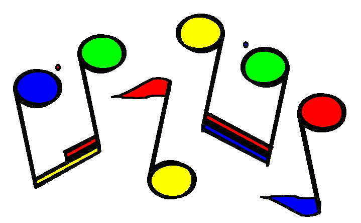
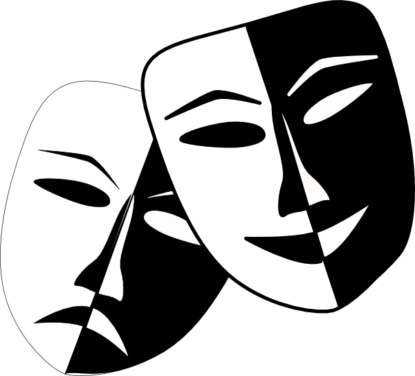

Types of Fine Arts
Home
Different Types of Fine Arts
Importance of Fine Arts
Why Schools Don't Have Fine Arts
Call to Action
Different Types of Fine Arts
Importance of Fine Arts
Why Schools Don't Have Fine Arts
Call to Action



Art is a great way to put whatever image is
in your head on canvas or paper.
Art can be very soothing
to the mind and help reduce stress.
Music can be a very fun way to express feelings and thoughts. Learning to play an instrument can improve a student's coordination and help with mathematical and reading and comprehension skills.
Acting in it's truest form can have a great impact on the mind of a high school student. Students would be able to have fun on stage while boosting their confidence and overcoming certain fears.
Dancing is not only a fun thing to do but it's a great form of exercise. Including some type of dance class or club will allow students to express themselves through the movement of their body and get fit.